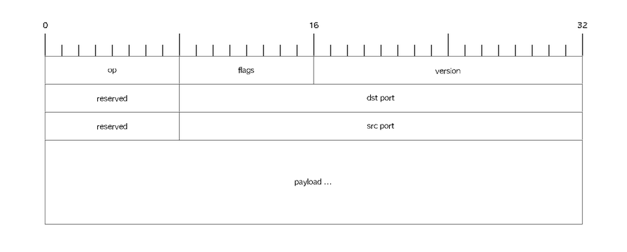
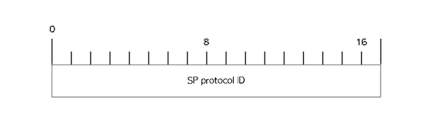

nng_zt_register(); // Register ZT transport
nng_pair_open(&sock);
nng_dial(sock, "zt://fedcba9876.a09acf02337b057b:999"); (1)Scalability Protocols
(nanomsg, nng, mangos, and other critters)
February 13, 2018
About Me
Garrett D’Amore
CTO & Founder, Staysail Systems, Inc.
Founder of illumos
BDFL nanomsg & creator of nng, mangos
Scalability Protocols
Light-weight messaging layer
Solves recurring messaging problems
Liberally licensed
Embeddable & Portable (ANSI C)
Message-oriented
Brokerless
Alternatives
ZeroMQ
RabbitMQ
AMQP
MQTT
REST/HTTP
BSD sockets
Others…
ZeroMQ
Much has been written here. Biggest turn offs to ZeroMQ are license and language, but some philosophical differences too.
See http://nanomsg.org/documentation-zeromq.html for some of Martin’s orgiinal thoughts.
Broker-based
RabbitMQ, AMQP require a broker, and a runtime (Java).
MQTT
MQTT is newer than nanomsg or ZeroMQ, and is intended for IoT use cases. It lacks most of the flexibility and power, and is a very simple PUB/SUB model (generally over TCP).
REST/HTTP API
REST (and HTTP) expreses the simple RPC style (REQ/REP) paradigm well. It does not support other patterns, and lacks any notion of automatic retry, reconnect, etc.
HTTP can be useful with proxies to load-balance, etc. however.
SP Implementations
Why?
Developer friendly
Administrator friendly
Business friendly
Buzzwords
Brokerless
Lightweight
Securable
Reliable
Performant
Scalable
Other Buzzwords
Open Source
Observable (TBD)
Composable
Separation of Code & Config
Broker vs. Brokerless
| Broker | Brokerless | |
|---|---|---|
Separate Daemon | Yes | No |
Runtime Requirements | Usually | Rare |
Persistent State | Yes | No |
Database Required | Frequently | No |
Extra Administration | Yes | Rarely |
Moral
If you absolutely need persistent state, a broker is required. For all other cases, brokerless is better.
Light-weight
ANSI C
Except mangos (golang) and scaporust (rust)
nng uses C99
Minimal optional external dependencies
Zero required external dependencies
Minimizable (nng only)
Optional Dependencies
For nng only:
- ARM mbedTLS
For TLS and wss transports. Apache licensed.
- ZeroTierOne
For zt transport; GPL, dev branch only
Minimizable
Every transport and every protocol can be disabled and omitted from the library. Furthermore, vanilla HTTP and TLS support may be removed.
Developer Friendly
Started with familiar POSIX API (send/recv, file descriptor based)
Even POSIX API is sometimes inconvenient.
Socket options style API for tunables.
Free developer from managing connections, reconnects, retries, etc.
Addresses are just URLs
Administrator Friendly
Brokerless!
No external runtime or other dependencies
Except for optional ZeroTier or mbedTLS (nng)
Device API supports proxies, concentrators, etc.
URL configuration for endpoint addresses
Some transports need extra config
Designed for scalability
Business Friendly
Liberal (MIT) license
mbedTLS dependency uses Apache license
No other dependencies
Commercial support available
Commercially sponsored
Securable (nng)
TLSv1.2 support availble (both TCP and websocket)
ZeroTier (!) for nng
Hardened against DoS and other protocol attacks
Different transport options provide flexibility
Device proxies
Hardened exterior
Inspectable interior
Reliable
Never assert except on gross programmer error
All system call return codes checked
Built-in retries & reconnects
Brokerless (no broker to fail)
Multipath capable
Performant
Optimal use of OS facilities
Tunables (throughput vs latency)
Nagle (on or off)
Buffer loaning to reduce data copies
Minimal use of extra system calls
No premature optimization
Scalable
Thread scaling to utilize multiple cores
Designed to support system aware pollers (kqueue, epoll, IOCP, etc.)
C10K capable (tested) (nng, mangos)
Device framework (horizontal scaling)
nng already outperforms libnanomsg (Win32)
Transports
TCP
IPC
inproc
websocket (with TLS on mangos and nng)
TLS (mangos and nng only)
ZeroTier (nng only)
QUIC (3rd party developed, mangos only)
UDP, KCP…. others proposed
Patterns (Protocols)
Req/Rep
Pub/Sub
Bus
Pipeline (Push/Pull)
Survey
Pair
Polyamorous Pair (nng only)
Star (mangos only)
Composable Architecture
"Device" layer
Acts like a proxy
Can cross transport boundaries
Can be concentrator
Transparent to applications
History Lesson (101)
BSD sockets begat ZeroMQ
ZeroMQ begat nanomsg
nanomsg begat mangos
mangos begat nng
History (301)
ZeroMQ’s use of GPL and C++ deemed distasteful.
ZeroMQ’s lack of thread-safety an inhibitor.
Martin Sustrik and Peter Hintjens had a falling out.
PostModern History
Garrett wrote mangos
Martin lost interest
Garrett started maintaining
Garrett stepped away … for a while
Garrett took back over as BDFL
Garrett started the nng effort
Mangos
mangos written to fill need for illumos/golang
project to learn nanomsg protocols and golang
over time became more featureful than nanomsg itself
Problems with nanomsg
FSMs run amok
Not "easily" extensible
Followed POSIX API "mistakes"
Suboptimal scaling
Single global processing thread
Hard-coded limits (e.g. on number of sockets)
Extra system calls
Not coded for production use
Enter nng
nanomsg-next-gen
Inspired by work on mangos
Started as fully thread-based design
Discovered that user threads scale poorly ~everywhere
Redesigned backend upon new asynchronous I/O framework modeled on Windows
Broke away from slavish adherence to POSIX API
Compatibility
All implementations are wire compatible (modulo specific features)
Protocols backed by "RFCs"
nng offers both legacy compat API & "modern" API
On some platforms, even ABI compatibility
Design goal is to support an entire ecosystem
Reliable By Design (nng)
Never assert on anything other than gross programmer error
Hardened against malformed wire packets
Protections against DoS (e.g. overallocation)
Tunable limits for "interior" use cases
Embeddability (nng)
Minimal dependencies
Clearly defined portability layer
Needs "thread" creation, locking, networking, and time APIs
Design supports coroutine based approach for "platforms"
Requires C99
VxWorks, FreeRTOS, etc. ports planned
ZeroTier Transport (nng)
Uses VL2 only (No IP addresses!)
Built on dev branch (libzerotiercore.a)
Supports persistent and ephemeral nodes.
Provides platform services (improved portability)
Bottom half uses UDPv4 and v6
Apps can resuse node multiple times
Apps can join multiple nodes & networks
Supports federations (moons)
ZeroTier Packet Format
Header for all ZeroTier transport frames:

ZeroTier Data Frames
This is the payload for DATA frames.

ZeroTier Connection Frames
User data for connetion commands:

Sample ZeroTier Dialer
| 1 | Port 999, node 0xfedcba9876, network a09acf02337b057b |
WebSocket Support
Original implementation is toylike
No support for TLS
Only one server per TCP port (no port sharing)
Exclusive to SP use
WebSocket Support
New implementation is full featured
Inspired by mangos
TLS support
Full HTTP server and client
Multiple sockets can share a port (path discrimination)
Can support arbitrary headers, etc.
HTTP Server Support
Server supports pluggable handlers
Handlers for file, dir, and static content
Handler can "hijack" connection
HTTP/1.0 and HTTP/1.1 only
Pluggable transport (TCP, TLSv1.2, etc.)
Written for WebSocket, but "public" API
Probably only useful for C and C++ apps.
HTTP Client Support
Lower-level API support only at this point
HTTP/1.x only
No "convenience" methods (yet)
No auto support for proxies, redirects, etc.
And yet still can easily build all that on top
HTTP client auth (TLS) supported
Documentation
RFCs
man pages
examples
New nng capabilities
TLS
rich WebSocket
Rich HTTP
ZeroTier
Binding to port 0
Peer/pipe properties
Polyamorous/PairV1
Test Suite
Uses CMake/CTest
Custom framwork inspired by GoConvey
Legacy tests imported for compat
Performance and scaling tests
Integrated with CI
Project Status
nanomsg - actively supported, sustaining
mangos - actively supported
nng - beta ready, actively developed
Future Directions
Docs & Examples
Statistics & Observability
Transports (UDP, QUIC, KCP, TIPC, RoCE, SSH?)
Pure JavaScript implementation
ZeroMQ interop?
HTTP enhancements
Other TLS backends? (libressl? bearssl?)
API enhancements
Performance